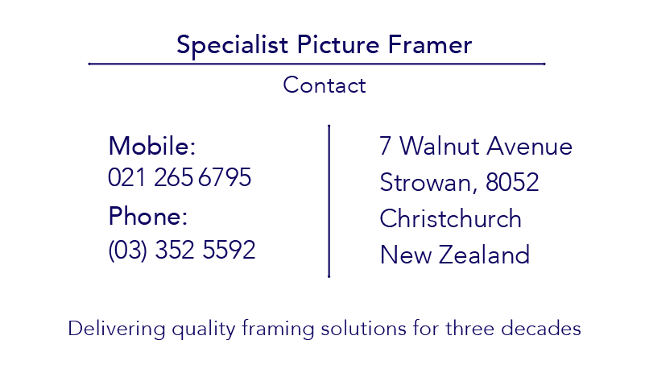

The re-branding for this project was fairly simple. I was briefed to project the current brand
colour into the new designs and integrate this with a logo purpose built for a business card and sticker for
the clients completed products. I was shown a couple of images that the client wanted me to look to for
inspiration-these appeared to be art deco focussed so I based my concepts around this.
After some consideration the client had actually decided they wanted something more modern but still pulling
from the art deco style concepts I had initially created. So, I got to work being more literal with the
visuals of the logo while keeping the art deco elements in-tact. We decided it was important that the design
incorporated the idea of a frame to tie the two themes as well as what the business produces together.